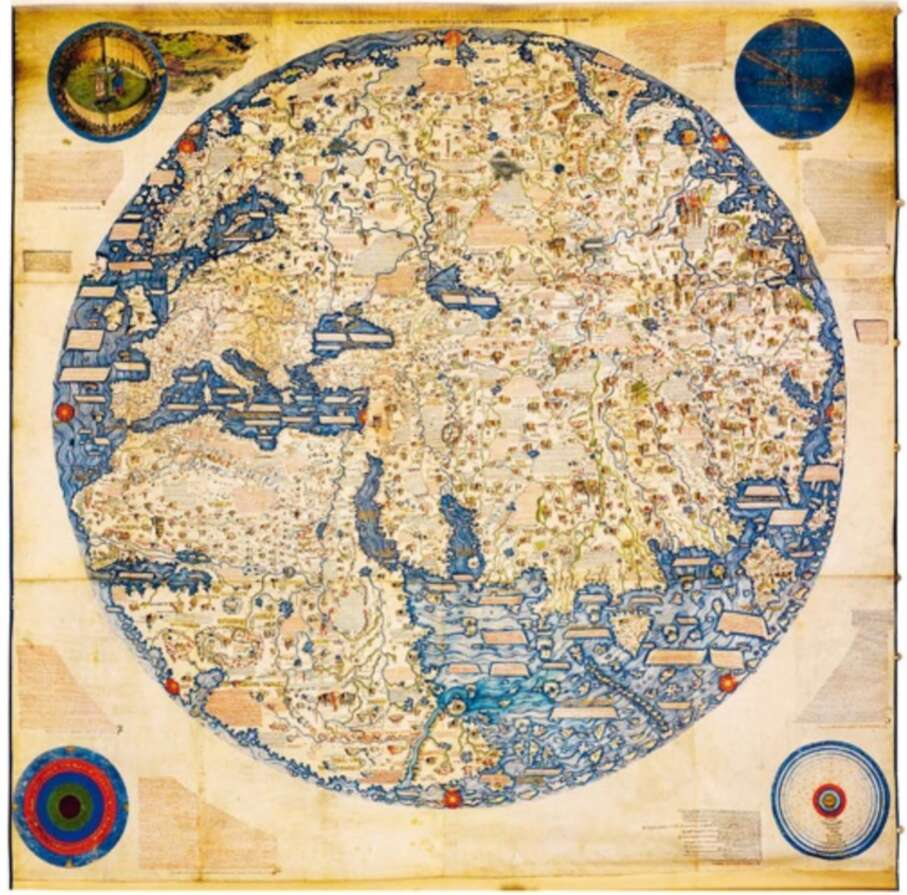

into a hitherto unknown moon circling the earth, which all previous observations had somehow failed to spot. In his refusal to admit ignorance, Columbus was still a medieval man. He was convinced he knew the whole world, and even his momentous discovery failed to convince him otherwise. 36. A European world map from 1459 (Europe is in the top left corner). The map is filled with details, even when depicting areas that were completely unfamiliar to Europeans, such as southern Africa. The first modern man was Amerigo Vespucci, an Italian sailor who took part in several expeditions to America in the years 1499-1504. Between 1502 and 1504, two texts describing these expeditions were published in Europe. They were attributed to Vespucci. These texts argued that the new lands discovered by Columbus were not islands off
